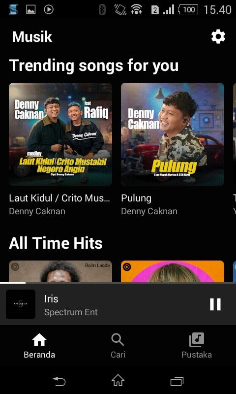
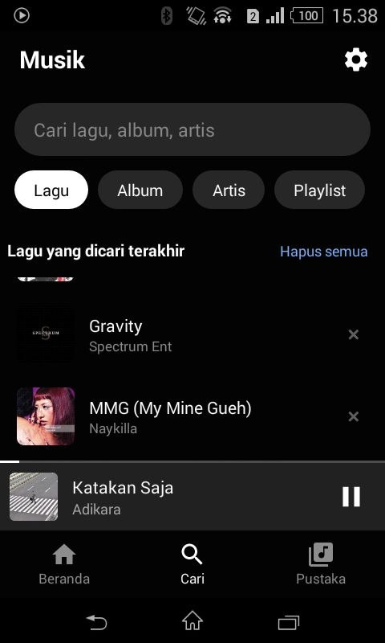
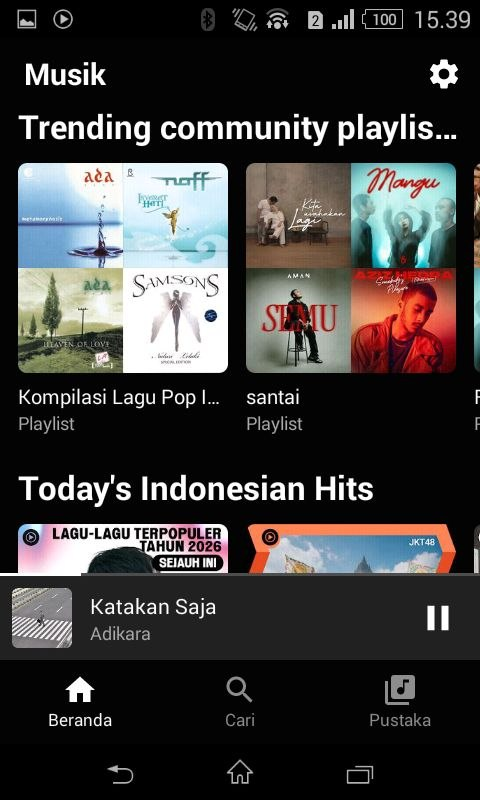
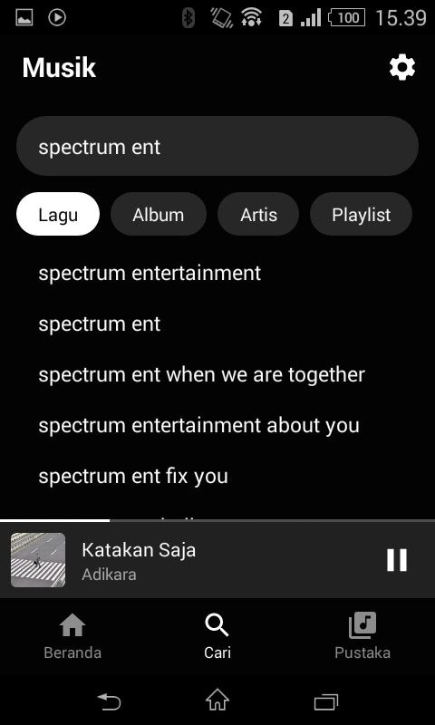
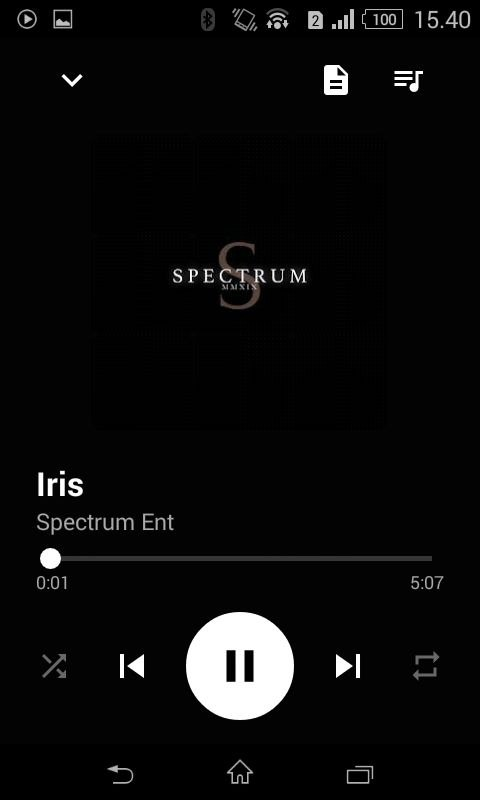
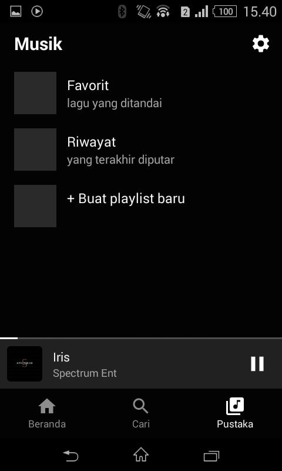

YTM Relay
YouTube Music resmi butuh Play Services dan TLS modern, jadi HP seperti Xperia E1 tidak bisa membukanya lagi. Aplikasi ini bicara ke server kecil milik sendiri, dan server itu yang mengurus YouTube.













Yang terjadi saat kamu memutar lagu
Server jalan di rumah
Satu proses Python menempel di alamat sendiri, dijaga token dan PIN. Server inilah yang punya koneksi TLS modern, bukan HP-nya.
HP lama membuka aplikasi
APK-nya kecil dan tidak butuh Play Services. Alamat server dan token diisi sekali di pengaturan.
Aplikasi minta daftar lagu
Pencarian dan rekomendasi dikirim ke server, lalu server mengembalikan daftar yang siap diputar.
Audio dialirkan, pustaka disimpan
Lagu berikutnya disiapkan lebih awal supaya pergantian tidak putus. Riwayat dan favorit tersimpan di sisi server, jadi tetap ada meski HP-nya diganti.
Isi aplikasinya
- Cari lagu, album, artis, playlist4 filter
- Putar tanpa login Google di HPtoken + PIN
- Riwayat dan favorit tersimpandi server
- Lagu berikutnya disiapkan lebih awalprefetch
- Jalan di Android 4.4 tanpa Play ServicesKitKat
- Tanpa iklan, tanpa pelacakanselamanya
Kenapa dibuat
Xperia E1 saya masih hidup dan baterainya masih bagus. Yang mati cuma aksesnya: YouTube Music resmi menolak handshake HTTPS lama, dan Play Services tidak ada di sana.
Daripada membuang HP yang masih bisa dipakai, saya pindahkan bagian beratnya ke server. Hasilnya satu aplikasi tipis yang jalan di perangkat 2014, dengan pustaka yang tetap milik sendiri.
Unduh YTM Relay
APK diambil langsung dari GitHub Releases, bukan dari situs ini. Kalau sudah ada versi lama, uninstall dulu sebelum memasang yang baru.